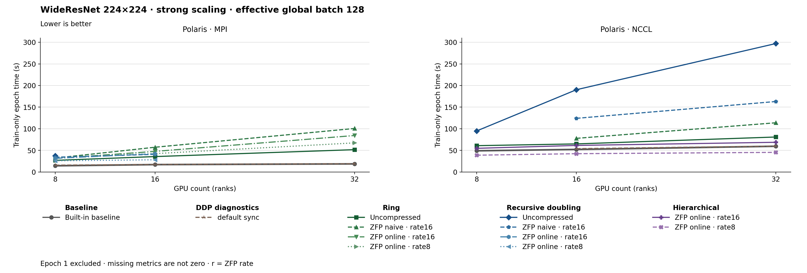

The figure uses lines. Methods use colors, line styles and markers. The metric is Train-only epoch time (s). Polaris · MPI, GPU count (ranks) 8: Built-in baseline has the lowest plotted value, 14.420. Polaris · MPI, GPU count (ranks) 16: Built-in baseline has the lowest plotted value, 17.140. Polaris · MPI, GPU count (ranks) 32: Built-in baseline has the lowest plotted value, 18.790. Polaris · NCCL, GPU count (ranks) 8: Hierarchical · ZFP online · rate8 has the lowest plotted value, 38.875. Polaris · NCCL, GPU count (ranks) 16: Hierarchical · ZFP online · rate8 has the lowest plotted value, 42.360. Polaris · NCCL, GPU count (ranks) 32: Hierarchical · ZFP online · rate8 has the lowest plotted value, 45.430. Epoch 1 is excluded. Values are medians; when repeated runs are available the selected repeat policy is median. These are not confidence intervals across repeated jobs. Missing or unrecorded metrics are omitted, not set to zero.
| Panel | GPU count (ranks) | Method | Value | Runs |
|---|---|---|---|---|
| Polaris · MPI | 16 | none | 17.14 | 1 |
| Polaris · MPI | 16 | default_sync | 17.47 | 1 |
| Polaris · MPI | 16 | ring | 35.68 | 1 |
| Polaris · MPI | 16 | ring_zfp_naive:16 | 57.29 | 1 |
| Polaris · MPI | 16 | ring_zfp_online_coll:16 | 47.695 | 2 |
| Polaris · MPI | 16 | recursive_doubling_zfp_naive:16 | 40.87 | 1 |
| Polaris · MPI | 16 | recursive_doubling_zfp_online_coll:16 | 42.29 | 2 |
| Polaris · MPI | 16 | recursive_doubling_zfp_online_coll:8 | 28.3 | 2 |
| Polaris · MPI | 16 | ring_zfp_online_coll:8 | 42.515 | 2 |
| Polaris · MPI | 32 | none | 18.79 | 1 |
| Polaris · MPI | 32 | default_sync | 19.17 | 1 |
| Polaris · MPI | 32 | ring | 51.65 | 1 |
| Polaris · MPI | 32 | ring_zfp_naive:16 | 100.68 | 1 |
| Polaris · MPI | 32 | ring_zfp_online_coll:16 | 84.37 | 1 |
| Polaris · MPI | 32 | ring_zfp_online_coll:8 | 67.35 | 1 |
| Polaris · MPI | 8 | none | 14.42 | 1 |
| Polaris · MPI | 8 | default_sync | 15.85 | 1 |
| Polaris · MPI | 8 | ring | 26.92 | 1 |
| Polaris · MPI | 8 | ring_zfp_naive:16 | 32.22 | 1 |
| Polaris · MPI | 8 | ring_zfp_online_coll:16 | 31.3 | 1 |
| Polaris · MPI | 8 | ring_zfp_online_coll:8 | 33.98 | 1 |
| Polaris · MPI | 8 | recursive_doubling | 37.35 | 1 |
| Polaris · MPI | 8 | recursive_doubling_zfp_naive:16 | 34.19 | 1 |
| Polaris · MPI | 8 | recursive_doubling_zfp_online_coll:16 | 31.64 | 1 |
| Polaris · MPI | 8 | recursive_doubling_zfp_online_coll:8 | 25.96 | 1 |
| Polaris · NCCL | 16 | none | 52.2 | 1 |
| Polaris · NCCL | 16 | default_sync | 53.99 | 1 |
| Polaris · NCCL | 16 | ring | 64.98 | 1 |
| Polaris · NCCL | 16 | ring_zfp_naive:16 | 77.84 | 1 |
| Polaris · NCCL | 16 | hierarchical_zfp_online_coll:16 | 61.46 | 2 |
| Polaris · NCCL | 16 | hierarchical_zfp_online_coll:8 | 42.36 | 2 |
| Polaris · NCCL | 16 | recursive_doubling | 190.3 | 1 |
| Polaris · NCCL | 16 | recursive_doubling_zfp_naive:16 | 124.11 | 1 |
| Polaris · NCCL | 32 | none | 59.57 | 1 |
| Polaris · NCCL | 32 | default_sync | 59.97 | 1 |
| Polaris · NCCL | 32 | ring | 80.94 | 1 |
| Polaris · NCCL | 32 | ring_zfp_naive:16 | 113.84 | 1 |
| Polaris · NCCL | 32 | hierarchical_zfp_online_coll:16 | 68.73 | 1 |
| Polaris · NCCL | 32 | hierarchical_zfp_online_coll:8 | 45.43 | 1 |
| Polaris · NCCL | 32 | recursive_doubling | 297.11 | 1 |
| Polaris · NCCL | 32 | recursive_doubling_zfp_naive:16 | 163.02 | 1 |
| Polaris · NCCL | 8 | none | 49.07 | 1 |
| Polaris · NCCL | 8 | ring | 60.92 | 1 |
| Polaris · NCCL | 8 | hierarchical_zfp_online_coll:16 | 54.755 | 2 |
| Polaris · NCCL | 8 | hierarchical_zfp_online_coll:8 | 38.875 | 2 |
| Polaris · NCCL | 8 | recursive_doubling | 94.94 | 1 |